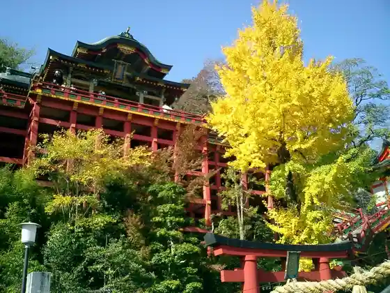
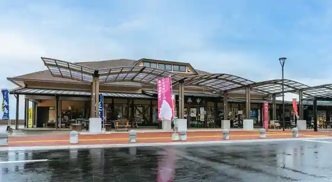
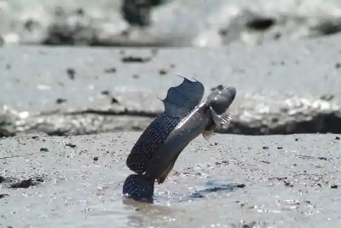

Yutoku Inari Shrine Nippon Garden Yutoku Museum
Kashima, Saga · 0954-62-2151 · Official / source link

Roadside Station (Kashima)
Kashima, Saga · 0954-63-1768 · Official / source link

Higata Koryu Kan Nana Umi
Kashima, Saga · 0954-60-5028 · Official / source link

Experience : Higata Experience
Kashima, Saga · 0954-60-5040 · Official / source link
Hizen Hama Yado
Kashima, Saga · 0954-69-8004 · Official / source link
Kanko Shuzo Hizen Ya
Kashima, Saga · 0954-63-2468 · Official / source link
Fuku Chiyo Shuzo Yugengaisha
Kashima, Saga · 0954-62-3727 · Official / source link
Hizen Hama Yado Shuzo Tori (Juyo Dentoteki Kenzobutsu Hozon Chiku)
Kashima, Saga · 0954-69-8004 · Official / source link
Yutoku Monzen Shopping Street
Kashima, Saga · 080-1532-3240 · Official / source link
Hizen Hama Eki Tourist Information
Kashima, Saga · 0954-69-8004 · Official / source link
Kyu Norita Ie House
Kashima, Saga · 0954-69-8004 · Official / source link
Nakaki Niwa Damu Kohan Park Yamabiko Plaza
Kashima, Saga · 0954-63-3415 · Official / source link
Kashima Nyutsurizumu Suishinkyogikai
Kashima, Saga · 0954-63-1768 · Official / source link
no Gomi Ningyo
Kashima, Saga · 0954-63-4085 · Official / source link
Yoshihime Shuzo
Kashima, Saga · 0954-63-3708 · Official / source link
HAMABAR
Kashima, Saga · 0954-60-4160 · Official / source link
Hana no Tera Omoto Yama Tanjo In
Kashima, Saga · 0954-62-3402 · Official / source link
Yutoku Monzen no Sakura Namiki
Kashima, Saga · 080-1532-3240 · Official / source link
Okudaira Tani Campground
Kashima, Saga · 0954-63-3412 · Official / source link
Ta Zatsu Shoten
Kashima, Saga · 0954-63-2601 · Official / source link
Asahigaoka Park
Kashima, Saga · 0954-63-3412 · Official / source link
Goshigaisha Kobu Shuzo Ba
Kashima, Saga · 0954-62-3033 · Official / source link
Kashima Tourist Information (Kashima Tourism Association)
Kashima, Saga · 0954-60-5145 · Official / source link
Experience Kata Minshuku (Minna no Ie)
Kashima, Saga · 0954-62-8444 · Official / source link
Yano Shuzo
Kashima, Saga · 0954-63-2008 · Official / source link
Ajisai Sono (Nakaki Niwa Damu Kohan Park)
Kashima, Saga · 0954-63-3412 · Official / source link
Yugengaisha Baba Shuzo Ba
Kashima, Saga · 0954-63-3889 · Official / source link
Hama Shozu Town Hamakin Ya Town Chiku no Nansen Tsu Kayabuki 3 to (Juyo Dentoteki Kenzobutsu Gun Hozon Chiku)
Kashima, Saga · 0954-69-8004 · Official / source link
Kashima Yakusho
Kashima, Saga · 0954-63-2111 · Official / source link